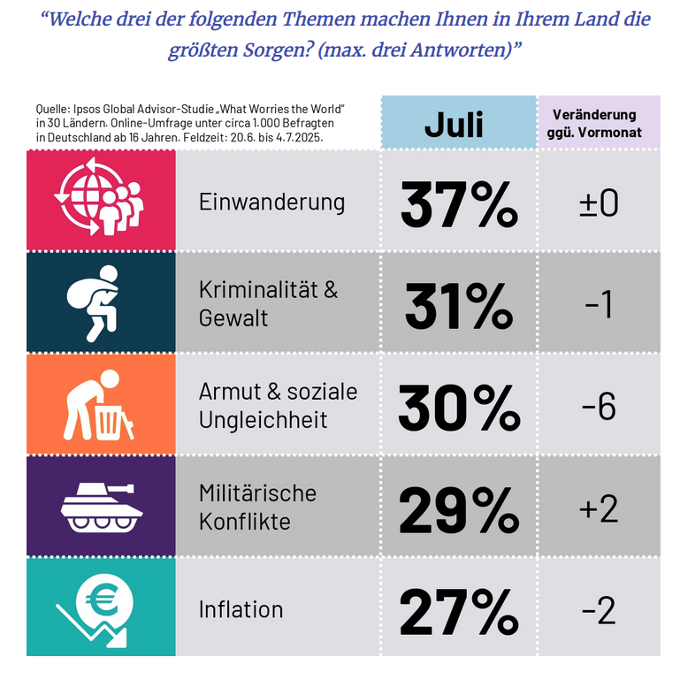

Nachhaltigkeit ist tot. Lang lebe die Nachhaltigkeit!
25.08.2025
Russlands Angriffskrieg auf die Ukraine. Der Konflikt zwischen Gaza und Israel. Trumps Zollpolitik. Ermordete Welse im Brombachsee. All diese Themen haben eins gemeinsam: Sie dominieren die deutsche Medienlandschaft und Social Feeds. Und all diese Themen sind es auch wert, darüber berichtet zu werden (ok, eventuell das mit dem Wels nicht). Also was ist dann mein Problem: Eines der wichtigsten aktuellen Krisen der heutigen und sicherlich auch der zukünftigen Zeit findet unverhältnismäßig wenig in der Medienlandschaft statt: Die Klimakrise! – Oder ist das nur subjektive Wahrnehmung? Schauen wir es uns mal an.

Ist die Klimakrise wirklich so wichtig?
Wichtigkeit
Zunächst stelle ich mir die Frage: Ist die Klimakrise wirklich so wichtig und wollen wirklich so viele Menschen darüber Berichte konsumieren? Dass die Klimakrise wohl eines der größten Probleme unserer Zeit ist, spüren wir in Deutschland nicht erst seit der Flutkatastrophe im Ahrtal am eigenen Leib. Hitzerekord nach Hitzerekord wird gebrochen, die Winter sind spürbar wärmer geworden und neue Insektenarten siedeln sich in unserer Klimazone an. Ein Blick in den IPCC-Bericht verrät: Es gibt einen breiten Konsens unter Klimaforscher:innen, auch wenn einige rechts-populistische Ausnahmen im Internet das nicht wahrhaben wollen.
Sorge der Menschen
Die These steht nun im Raum, dass trotz dieses wichtigen Themas die Medienlandschaft einfach nicht darüber berichtet. Oder interessiert es die Bevölkerung etwa gar nicht? Ein Blick aufs Sorgenbarometer vom Juli 2025 zeigt: Nö.
- Migration (37%)
- Kriminalität (31%)
- Armut (30%)
- Militärische Konflikte (29%)
- Inflation (27%)
- Extremismus (22%)
- Klimawandel (20%)
Anscheinend hat nur jede:r fünfte Deutsche Sorge um das Klima. Da bin ich wohl sehr tief in meiner Bubble und muss gestehen, die Menschen fordern wohl überhaupt nicht so viel Berichterstattung von den Medien.
Zirkelschluss
Hier beißt sich jedoch die Katze in den Schwanz. Eine niedrige Berichterstattung führt dazu, dass die Sorge nicht so groß ist, wohingegen eine erhöhte Berichterstattung vermutlich auch dazu führen würde, dass das Problem in der Gesellschaft wieder ernster genommen wird. Ein klassischer Zirkelschluss. Die eine Tatsache bedingt die andere und es ist nicht klar, was der Auslöser für den Rückgang in der Berichterstattung ist (zumindest mir nicht). Mein Tipp ist: Menschen sind furchtbar schlecht im Jonglieren multipler Krisen, und da es momentan einfach Gefahren und Ängste gibt, die im Zeithorizont näher erscheinen, gerät das weit Entfernte in Vergessenheit. Die Klimakrise könnte jedoch unsere letzte Krise sein, wenn wir (und die Medien) nicht lernen, damit umzugehen.
Wird sie wirklich so stark unterrepräsentiert?
Disclaimer
Ich beziehe mich auf die Tagesschau, da das in meiner persönlichen gefühlten Wahrnehmung noch eines der am meisten genutzten Medien Deutschlands ist. Natürlich gibt es noch andere Medien und natürlich verschiebt sich der Medienkonsum immer mehr ins Internet.
Klima ist Thema, ohne Thema zu sein
Tatsache ist: In nahezu jeder Tagesschau-Sendung ist die Klimakrise ein Thema, auch wenn sie nicht offen benannt wird. Grundwasserknappheit, Hurricanes in Amerika, Waldbrände in Spanien etc. haben alle mit der Klimakrise zu tun. Nur ist es nicht Susanne Daubners Aufgabe, diesen einfachen Brückenschlag zur Ursache-Wirkung-Kette herzustellen.
Eine Tagesschau-Berichterstattung sieht folgendermaßen aus:
„Waldbrände in Spanien vernichten riesige Flächen. – In Spanien toben weiter die Flammen: Innerhalb nur eines Tages ist so viel Fläche verbrannt wie im gesamten Jahr 2024. Zur Unterstützung ist inzwischen internationale Hilfe eingetroffen, die Hoffnung ruht aber vor allem auf einem Wetterumschwung.“
Sie könnte aber auch so aussehen:
„Waldbrände in Spanien vernichten riesige Flächen. – In Spanien toben weiter die Flammen: Innerhalb nur eines Tages ist so viel Fläche verbrannt wie im gesamten Jahr 2024. Zur Unterstützung ist inzwischen internationale Hilfe eingetroffen, die Hoffnung ruht aber vor allem auf einem Wetterumschwung. Begünstigt werden die Waldbrände durch extreme Hitze und Dürre aufgrund der Klimakrise.“
Aufgabe der Medien?
Es ist fraglich, ob dieser gedankliche Brückenschlag Aufgabe der Medien ist. Menschen, die sich tagtäglich damit befassen, wissen um den Zusammenhang. Menschen, die es nicht interessiert, interessiert auch der Zusammenhang wenig. Ich sage nicht, dass die Tagesschau (als Beispiel für alle klassischen Medien) so berichten sollte wie im Beispiel oben, aber es würde mit Sicherheit dazu führen, dass die Ursache-Wirkung-Kette zwischen Extremwetterereignissen und der Klimakrise mehr in die Köpfe der Deutschen Einzug erhält.
Was kann jede:r Einzelne tun, um etwas positiv zu ändern?
- Nervt eure Freund:innen und Verwandte mit der Klimakrise. (Natürlich im angemessenen Maß). Nur weil ihr informiert seid, sind andere das nicht automatisch auch.
- Folgt Klima vor 8 überall, wo ihr könnt. Sie setzen sich für Klima-Berichterstattung in der Prime Time ein.
- Engagiert euch. Jetzt erst recht! Nur weil es wenige Menschen interessiert, bedeutet das nicht, dass ihr es nicht nach außen tragen könnt.
Fazit
Die Relevanz der Klimakrise hat es momentan schwer. Andere Krisen erscheinen wichtiger, das Interesse in der Bevölkerung ist gering und mediale Berichterstattung hat diesbezüglich Verbesserungspotential. Aber noch ist nicht alles verloren. Geht ins Gespräch, repräsentiert das Thema am Küchentisch, werdet nicht müde und vor allem: behaltet euren Optimismus bei!